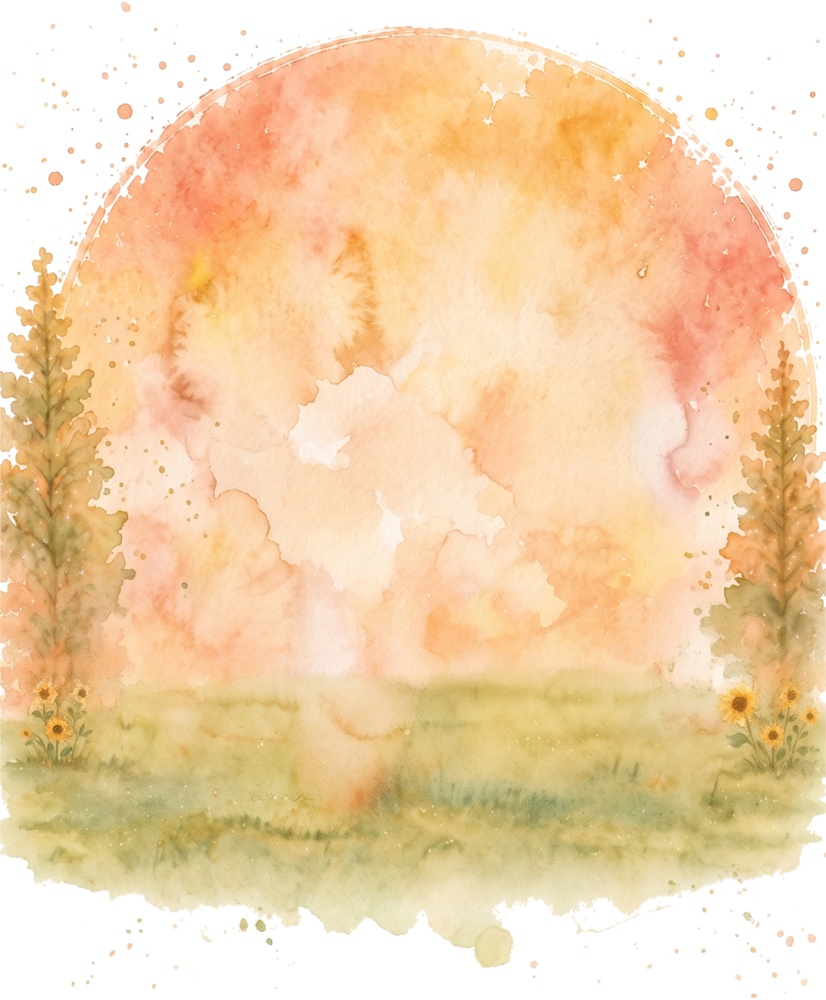
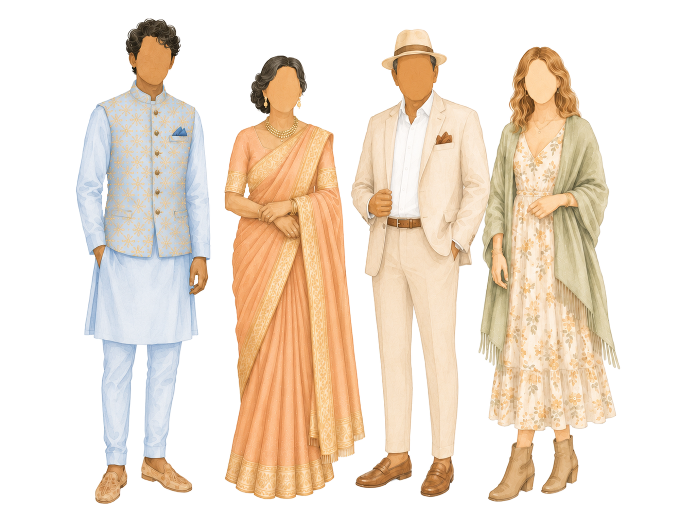
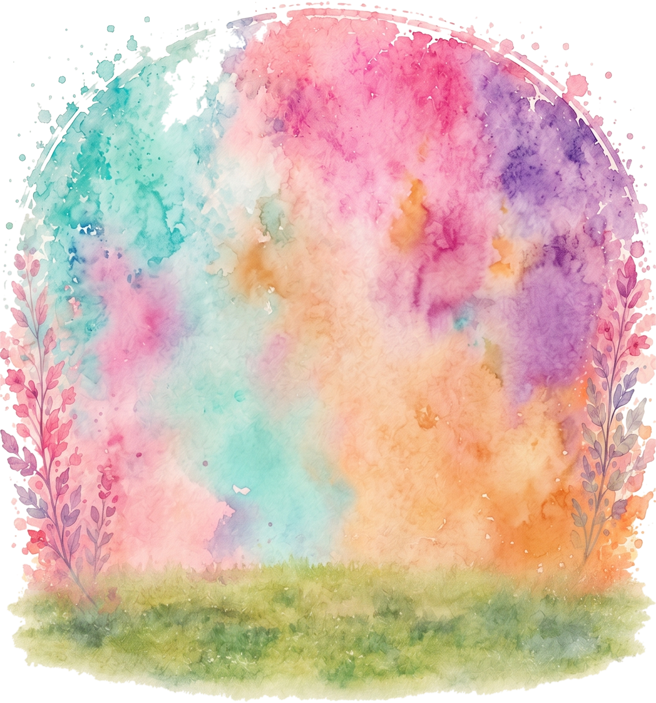
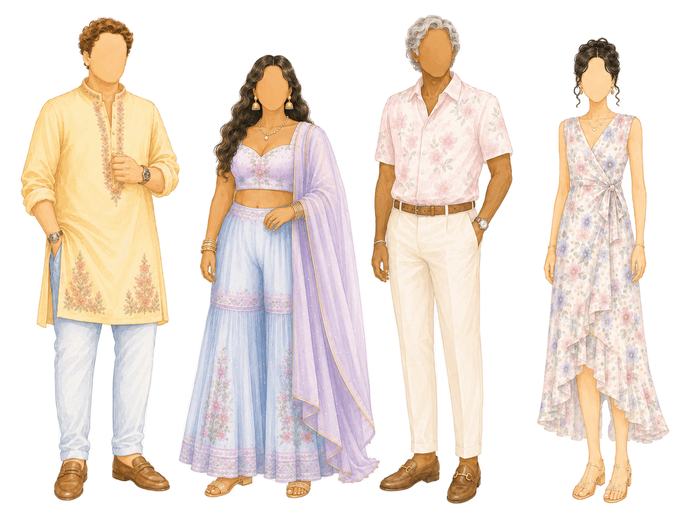
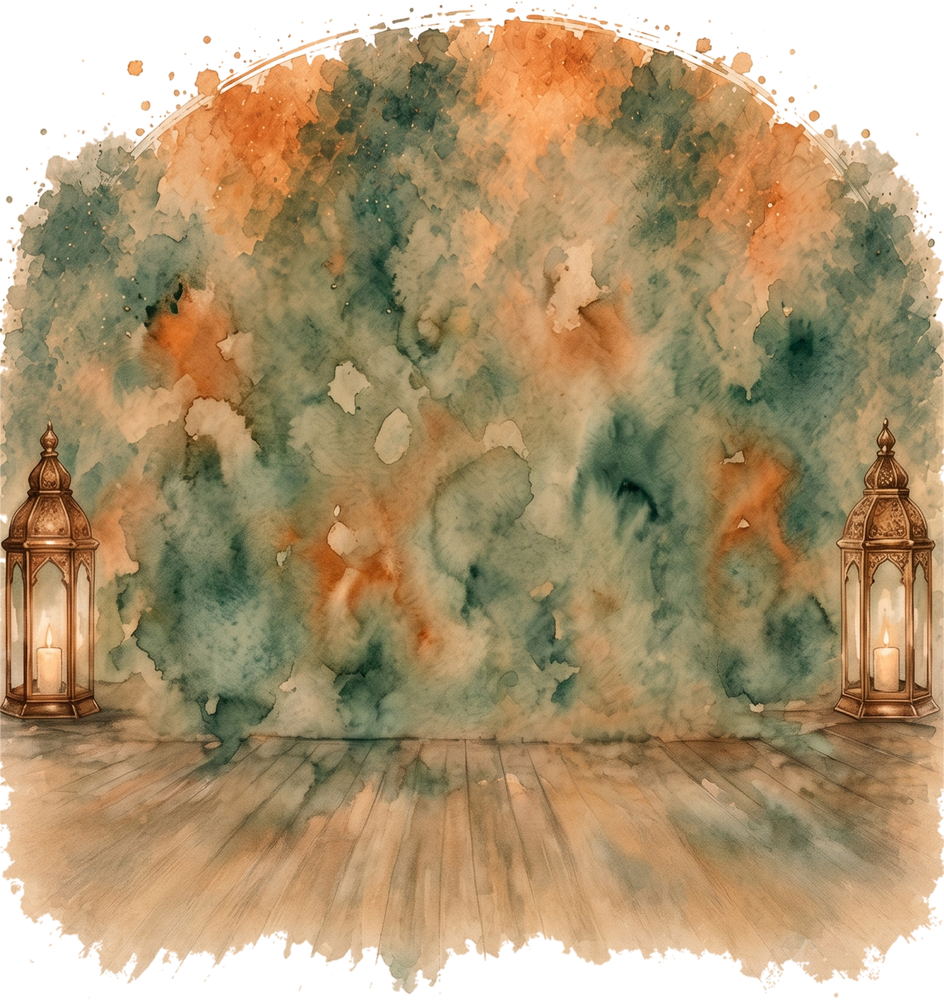
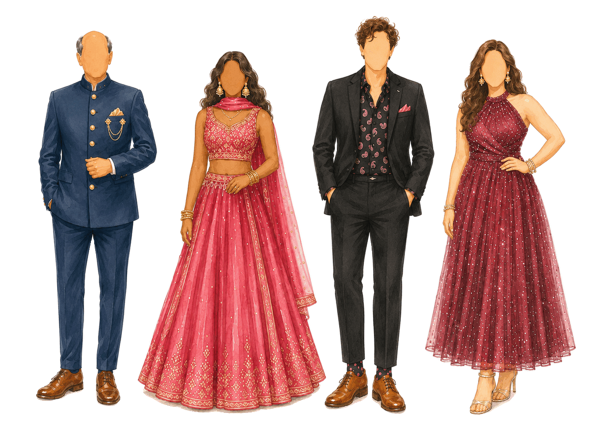

Sunset Shaadi
CEREMONY
Saturday, September 5, 2026 · 4:00 PM


Traditional Elegance
Ethnic
Classic Ethnics
Western
Summer Cocktail Attire

We created this as inspiration, not as a shopping list. The weekend includes a full schedule of sun, heat, grass, games, and dancing, with limited time between events.
More than anything, we care that you feel comfortable, stay safe, and are there with us on time. Your presence to enjoy with us matters far more than any specific outfit.
Abha & Udit
CEREMONY
Saturday, September 5, 2026 · 4:00 PM


Traditional Elegance
Classic Ethnics
Summer Cocktail Attire
BARAAT & CARNIVAL
Sunday, September 6, 2026 · 10:00 AM


Colorful Summer Garden
Indian Wedding Casual
Summer Dressy Casual
SANGEET RECEPTION
Sunday, September 6, 2026 · 5:00 PM


Glitz and Glamour
Formal Evening Ethnics or Indo-Westerns
Creative Cocktail Attire